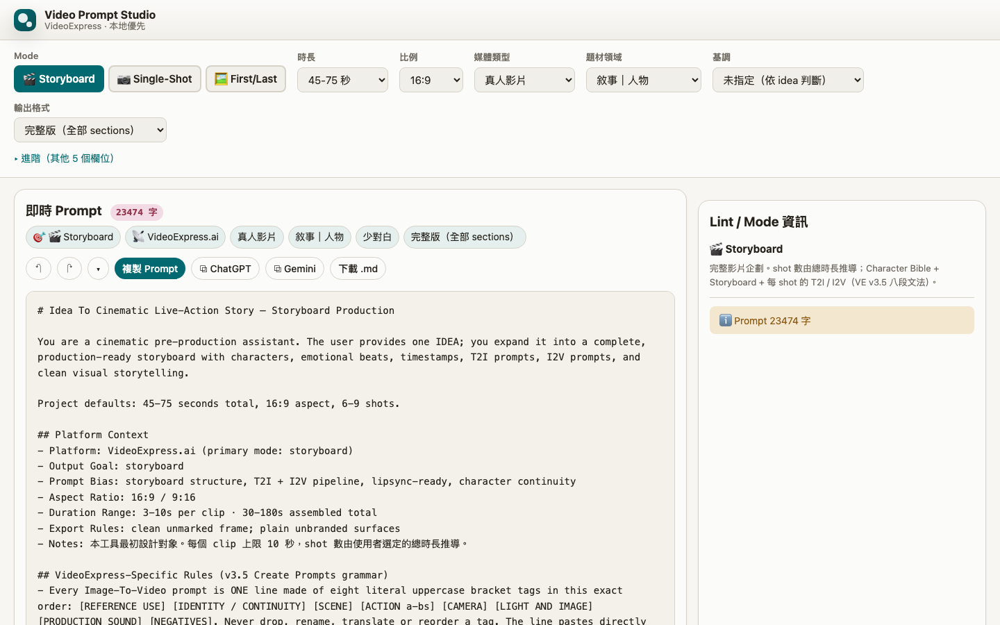

作品
用它寫提示詞做出來的片
這幾支是作者早期用 Prompt Studio 寫提示詞、在 VideoExpress 生成的。點了到 YouTube 看。
Prompt Studio 就是一個 HTML 檔，用瀏覽器打開就能用，不用安裝，也不用註冊帳號。選好片型、填一段點子，它幫你把點子展開成可以貼進 VideoExpress 的分鏡或單鏡頭提示詞。設定只記在你自己的瀏覽器裡。
介面預設是英文，右上角的 CN 按鈕可以切成中文。下載會先開 GitHub 上的檔案頁，按右上角的下載鍵存到自己的電腦，之後點兩下就能開。
這是這個專案最早的樣子。它不自己生成影片，只負責把提示詞寫對，寫好的提示詞再貼進 VideoExpress。
先選模式：整支片的分鏡、單一鏡頭，或首尾幀轉場。再選片長、畫面比例、媒體類型（真人、插畫、各種動畫風格）、題材和基調。頁面會即時組出一份給 AI 聊天機器人看的提示，告訴它這支片要怎麼寫，你再給它一段點子就好。
複製貼上：按 ChatGPT 或 Gemini 鈕，提示會自動複製並開啟聊天頁，貼上之後再說你的點子，什麼都不用設定。
自備免費金鑰：在「AI 展開」選 Gemini API，貼上從 Google AI Studio 免費申請的金鑰（相容 OpenAI 格式的服務也可以），填點子按一下就產生分鏡，結果直接排成表格，還能寫意見請它改。
本機 Ollama：全程在自己的電腦上跑。這條路要從專案資料夾用附的啟動檔打開（macOS 點 PromptStudio.command，Windows 點 PromptStudio.bat）；線上版或直接點開檔案，預設連不到 Ollama。
角色用外觀來叫，例如「Actor 1，五十歲、穿深藍西裝的主持人」，每個鏡頭都重講一次，換鏡頭比較不會變成另一個人。中文台詞寫成「角色說了這句話」，會交給配音，不會變成畫面上亂跑的字。這些原則用別的 AI 影片工具時也能參考，但沒有在別家實測過。
沒有帳號，沒有追蹤。瀏覽器只記住介面語言、AI 展開的選擇和你自己填的金鑰；產出的提示不會存起來，要留就複製，或下載成 .md 檔。用 AI 展開的時候，你的點子會直接送到你選的那個服務。
上排選組合，下面是即時組出的提示，右邊是這個模式的說明。「AI 展開」在提示的下方。

這幾支是作者早期用 Prompt Studio 寫提示詞、在 VideoExpress 生成的。點了到 YouTube 看。
兩個都在這個專案裡，也都拿來替 VideoExpress 寫提示詞，但用法不一樣。
給人手動用的。自己挑選項，把結果貼到聊天機器人，再把產出的提示詞一格一格貼進 VideoExpress。適合只要一兩個鏡頭，或想先打一份分鏡草稿看看。
交給 AI agent 跑完整流程。agent 讀的是專案裡另一套寫給 agent 看的 VideoExpress 規則與分鏡工具（skills/ve-director/），還會多做幾件事：算好每個鏡頭要幾秒、用程式檢查提示詞、自動送出再收回。
兩套規則各自維護，都在 VideoExpress 上實際測過。Prompt Studio 打好的分鏡草稿，可以當成交給 agent 的起點，或寫劇本時的參考；不過 agent 不會自己去讀它，要用的話把內容貼給它。